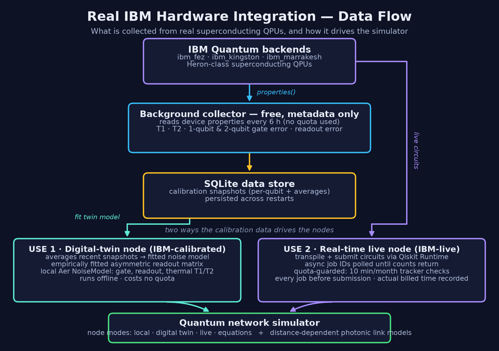
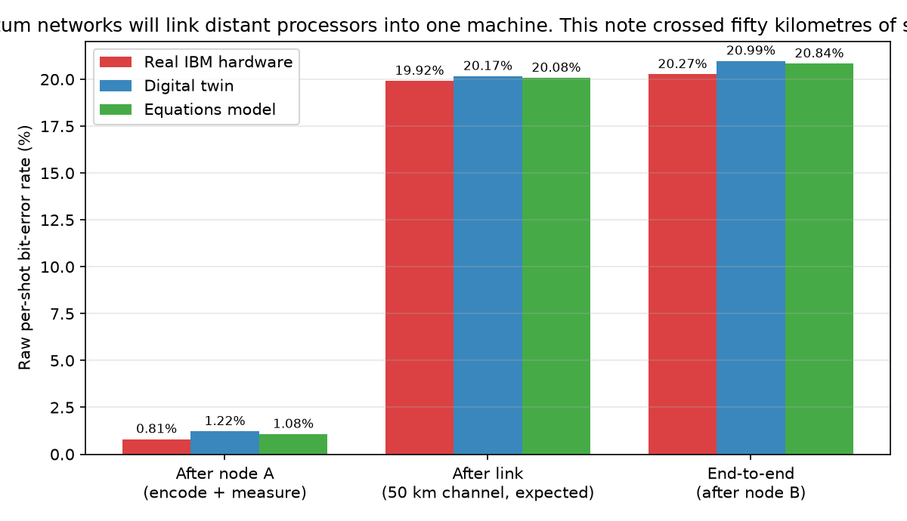
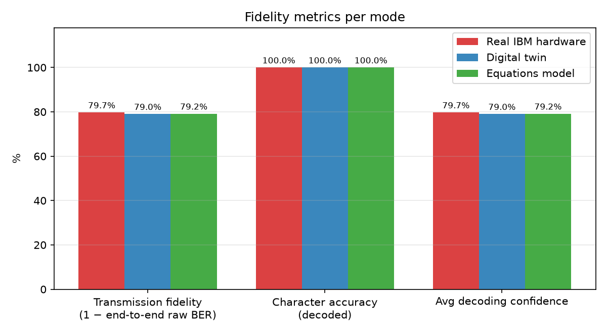
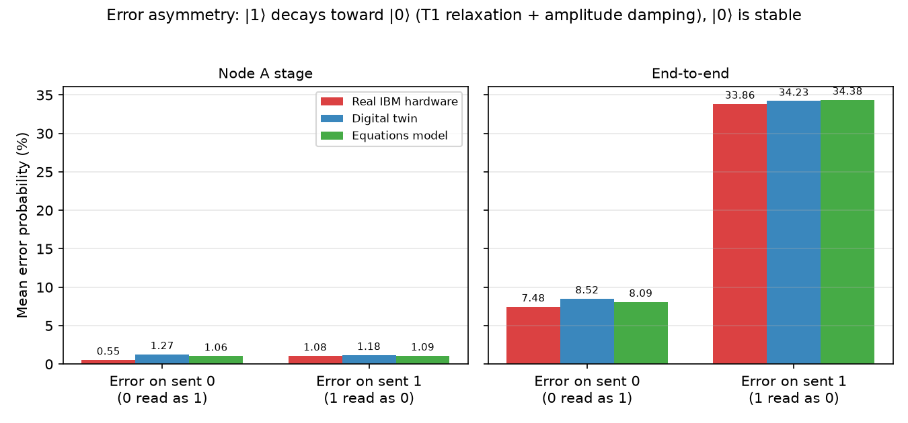
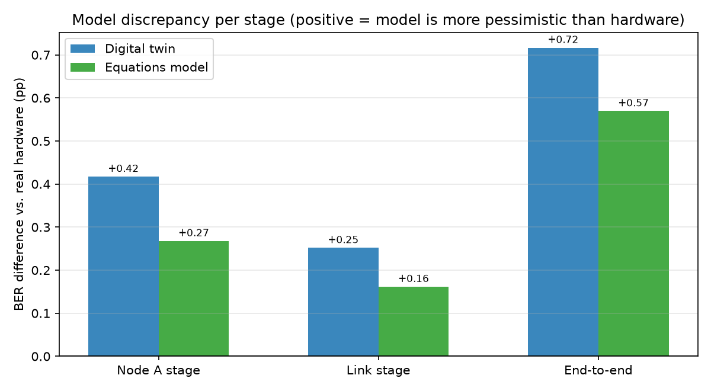
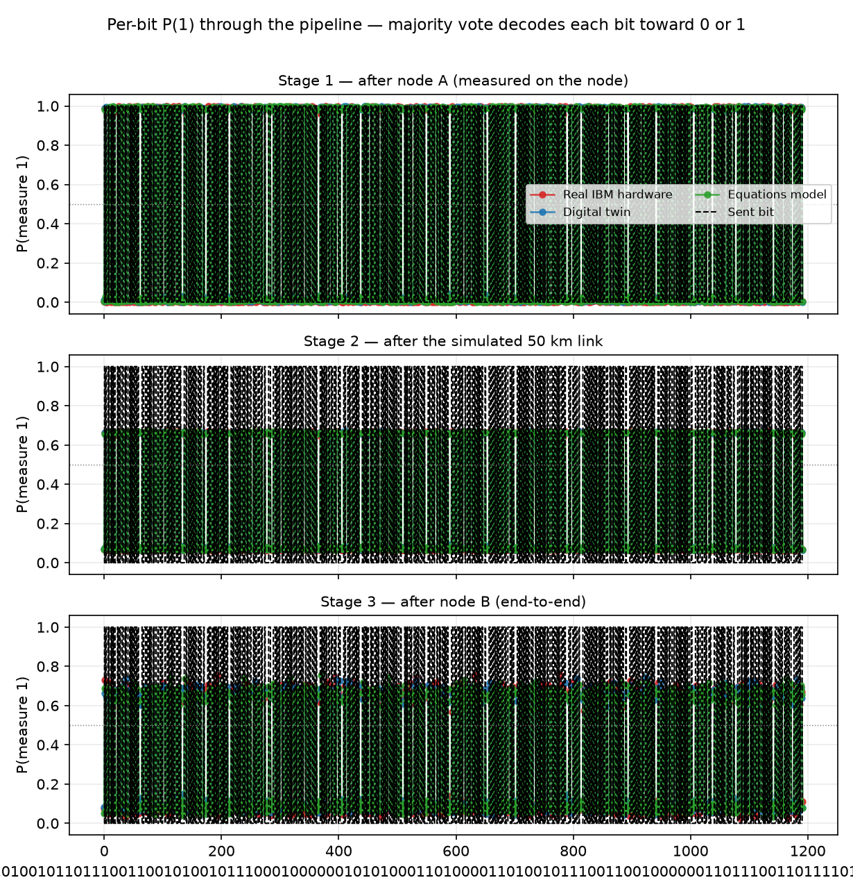

An integrated framework for quantum network research
An integrated framework for quantum network research
This framework integrates three components: a systematic literature survey of quantum networks, QuantumPaperMiner for the collection and generation of quantum data and equations, and a quantum network simulator for modelling network nodes and links spanning superconducting hardware and photonic channels.
✓ Survey-grounded methodology✓ Real hardware calibration✓ Fully local inference✓ Reproducible
01
Survey & Research
Quantum network survey
The research foundation: a systematic survey of quantum-network protocols, hardware, and the taxonomy of error types upon which the remaining components are built.
02
Data Collection & Generation
QuantumPaperMiner
A multi-agent system that extracts graphs, data points, and equations from the literature, and subsequently generates additional data, reports, and metadata.
03
Collection + Generation
Quantum network simulator
Models network nodes (calibrated from real superconducting QPUs) and links (photonic fiber / wireless channels), with collected data and fitted equations.
Framework organization
Framework structure
Two subsystems populate the quantum-network knowledge base: a data collection and generation subsystem (QuantumPaperMiner) and a simulation subsystem (nodes and links), both grounded in the survey research.
Quantum Data Collection & Generation
Converting the literature into structured, reusable quantum data
Collection
M
Manual — Paper
Hand-curated reading and annotation of key papers.
E
Error type
Catalogue of quantum error mechanisms drawn from the survey.
Q
QuantumPaperMiner
Automated mining across the literature.
papergraphdataequation
GenerationQuantumPaperMiner
R
Generate report / metadata
AI-written analysis reports and structured metadata.
D
Data points
Synthetic points produced from fitted equations.
Quantum Simulator — Collection + Generation
Physical-network modelling: nodes and the links between them
Node
C
Collect — from real QC hardware
Calibration captured from superconducting QPUs, generalized into data & equations.
superconductorT1 / T2gate & readout error
G
Generate — by hardware parameters
Synthesize node behaviour by varying different hardware parameters.
Linkphoton — fiber / wireless
D
Data
Channel measurements over distance for photonic links.
Both subsystems are anchored by the quantum network survey; its protocol and error-type taxonomy defines what is collected, generated, and simulated.
Component 02 · Data collection & generation
QuantumPaperMiner
A fully-local, multi-agent system that converts quantum-science papers into structured graphs, data points, and equations, and generates additional data from them, using local LLMs via Ollama.
1
Literature extraction
Eight specialized agents search arXiv / PubMed, retrieve PDFs, and interpret figures with any vision-capable Ollama model to recover the underlying numerical data.
2
Fits & validates equations
Extracted data is fitted to curves (linear, power, exponential, polynomial, log, trig) and validated with R² / RMSE.
3
Generates new data
Produces synthetic data points, analysis reports, and metadata from extracted or user-uploaded equations.
4
Searchable & private
Everything is embedded into a local ChromaDB vector store — no API keys, no documents ever leaving your machine.
Multi-source search
arXiv & PubMed discovery with LLM-ranked relevance and concurrent PDF download.
Vision extraction
Any vision-capable Ollama model reads graphs & tables and recovers data points.
Equation fitting
Curve fitting with R² / RMSE validation and clear data provenance.
Data generation
Interpolation, extrapolation, and dense sampling from any equation.
Vector search
Semantic search across papers, graphs, data points, and equations.
Built-in benchmarks
Preset quantum-science suites score search relevance and extraction quality.
Component 03 · Collection + generation
Quantum network simulator
A two-node-and-beyond quantum network built on Qiskit, with custom error models for long-distance communication. Nodes are calibrated from real superconducting hardware; links model photonic fiber / wireless channels.
N
Nodes — superconducting QPUs
Four interchangeable node-error modes: pure local Aer, digital twin (fitted from real T1/T2 & gate-error history), equations (rates derived from device physics), and live IBM hardware submission.
L
Links — photonic channels
Each link carries its own distance-dependent channel error model for fiber or free-space transmission.
Entanglement distribution, quantum teleportation, BB84 QKD, and distance-sweep fidelity analysis.
Real backends
ibm_fez · ibm_kingston · ibm_marrakesh
Heron-class superconducting QPUs.
Channels
Fiber · Wireless (photon)
Distance-dependent noise models.
Stack
Qiskit · Aer · IBM Runtime
With a Flask data dashboard.
Persistence
SQLite data store
Calibration history survives restarts.
Capabilities
What you can do with the simulator
The simulator ships with a no-code web dashboard organised into six tabs — Simulate, Visualization, Network, IBM Monitor, Digital Twin, and Data — so an experiment can be configured, run, and analysed entirely from the browser.
No-code dashboard
Configure, run, and visualise experiments from six tabs — including a live TensorFlow-Playground-style animation of a qubit crossing the link — no scripting required.
Tune the channel
Set distance, fiber loss, detector efficiency, dark-count rate, timing jitter, temperature, and polarization drift, then see their effect instantly.
Run protocols
Entanglement distribution, quantum teleportation, BB84 QKD with security analysis, data transmission, and automated distance sweeps.
Author error models
Enable, disable, or add your own node- and channel-level error types — from the UI or a config file — and rerun without touching code.
Build multi-node networks
Compose networks from nodes and links, lay out the topology, and run experiments across an end-to-end path.
Analyse & compare
Fidelity, QBER with the security threshold, per-channel error propagation, and a full run history for side-by-side comparison.
Architecture
System architecture
Two-layer design. Each node runs in one of four modes — local Aer, digital twin (fitted from real calibration history), live IBM hardware, or pure equations — while each link applies a distance-dependent photonic channel model. Protocols run over the node–link pair; results and fitted models are persisted to a SQLite store and fed back into node/channel generation. Unfamiliar terms are spelled out in the glossary strip at the bottom of the diagram.
Error models
Error types by layer
Errors are organised into two layers. Node-level errors act on local operations at each endpoint; channel-level errors act during transmission and scale with distance. Every error is implemented as a Qiskit quantum channel.
Node layerProcessor errors at each endpoint4 built-in types · applied at Alice / Bob
Error type
Physical cause
Quantum channel
1-qubit gate error
Control-pulse imperfections in single-qubit gates
depolarizing
2-qubit gate error
Unwanted interactions during CX / CZ / SWAP
depolarizing
Readout error
Misassigned measurement outcomes (real devices misread |1⟩ more often than |0⟩)
assignment matrix
Thermal relaxation
T₁ / T₂ decay while a qubit idles (T₂ ≤ 2T₁ enforced)
thermal relaxation
Link layerTransmission / channel errors8 built-in types · distance-dependent
Temperature-degraded T₁ / T₂ over the transit time
thermal relaxation
linear (transit time)
This node/link split is the app-wide taxonomy: every chart, comparison, and report categorises errors the same way. All types are built on five primitive channels — pauli, depolarizing, amplitude_damping, phase_damping, thermal_relaxation — and users can define additional custom errors at either layer (splice loss, WDM crosstalk, repeater noise, an eavesdropper model, …) with their own probability and distance scaling (linear, exponential, constant, per-splice, or per-repeater), from the UI or a config file.
Error models
Channel error-model equations
Every link error is a physically-motivated quantum channel whose strength is an explicit, closed-form function of the link's physical parameters. These are the exact expressions implemented in the simulator — no hidden fitting; change a parameter and every probability follows.
Symbol
Physical parameter
Default
Meaning
L
distance_km
50 km
Link length
α
fiber_loss_db_per_km
0.2 dB/km
Attenuation of telecom fiber at 1550 nm
ηd
detector_efficiency
0.9
Single-photon detector efficiency
pdark
dark_count_rate
10⁻⁶
False-detection probability per window
j
timing_jitter_ns
50 ns
Detector timing uncertainty
TK
temperature_k
300 K
Operating temperature
r
polarization_drift_rate
0.002 /km
Polarization drift per kilometre
The seven physical inputs. Every channel probability below is derived from these — they are the only knobs.
Beer–Lambert survival through single-mode fiber. Photon loss in a real network is heralded (a lost photon is a missed detection, not a wrong bit), so an effective amplitude-damping channel with Kraus operators K₀, K₁ is applied to the qubits that do arrive.
Stress-induced birefringence rotates polarization as the photon travels, modeled as symmetric Pauli noise (equal X, Y, Z probability) growing linearly with distance and clamped at ½ (fully mixed).
Base coherence times degraded by temperature, applied over a transit time that grows with distance (including buffering overhead) via Qiskit's thermal_relaxation_error(T₁, T₂, t).
Different wavelengths travel at different speeds, broadening the pulse by Δτ relative to the ≈1 ns detector coherence window w. Dispersion coefficient D = 17 ps/(nm·km), source linewidth Δλ = 0.1 nm.
All seven channels are composed in sequence into one CPTP transmission error per link, bound to the id gate (the simulator's convention for "in transit"). Multi-hop paths compose one such error per hop.
Assumptions & limits. Derived probabilities are clamped to physically sensible saturation values (shown as min(·) above). Photon loss is treated as heralded, so attenuation acts as an effective damping on received qubits rather than as erasure. The 90% detector efficiency gives every link a ~10% amplitude-damping floor even at 0 km, and the reported Bell fidelity is the Z-basis correlation P(00)+P(11) — a phase-insensitive upper bound on true state fidelity. At the default 50 km these expressions give transmission T = 0.100, photon loss 0.910, polarization error 0.100, and phase noise 0.015 — the channel is dominated by attenuation, as expected physically.
Hardware
Real IBM hardware integration
Nodes are grounded in real superconducting quantum processors. Calibration is harvested from IBM backends and then used two ways: as a locally-fitted digital twin, and as a real-time live node executing on the actual hardware.

Data flow. A background collector reads device properties from IBM backends (metadata-only, so it consumes no quota), stores them as calibration snapshots in SQLite, and feeds them into the two node modes below.
What is collected from each backend
Coherence times
Per-qubit T₁ (relaxation) and T₂ (dephasing), averaged across the device.
props.t1(q) · props.t2(q)
Gate errors
Single-qubit (sx, x) and two-qubit CNOT gate error rates.
Qubit count and full per-qubit raw calibration record.
config.n_qubits
Benchmark counts
Bell / GHZ / identity-sequence results (manual, quota-aware).
SamplerV2 · counts
Provenance
Timestamp and source tag (live / stored / defaults) for every snapshot.
timestamp · source
Use 1 · IBM-calibrated
Digital-twin node
Averages up to 20 recent calibration snapshots into a stable fitted noise model (mean, std, min/max per parameter).
Reports a fit-quality score of 1 − CV (coefficient of variation) — lower device drift means a more reliable twin.
Builds a local Aer NoiseModel: depolarizing on 1- and 2-qubit gates, thermal relaxation (T₁/T₂) on idle, and an empirically fitted asymmetric readout matrix — real devices misread |1⟩ more often than |0⟩, and the twin reproduces that.
Runs entirely offline with no quota — a faithful stand-in for the real QPU inside larger network simulations.
Use 2 · IBM-live
Real-time live node
Transpiles the circuit for the target backend and submits it via Qiskit RuntimeSamplerV2.
Jobs run asynchronously — the node returns a job ID that is polled until real measurement counts return.
Every submission is quota-guarded by a usage tracker against the 10 min/month budget: it estimates, warns, and blocks before spending time — then records the actually billed seconds after each job.
Falls back gracefully: live → stored snapshot → typical defaults, so simulations never stall when hardware is unreachable.
Results
Simulation results — real hardware vs digital twin vs equations
The flagship validation experiment (July 2026): the same message, same pipeline, same 50 km link — run three times, changing only where the node errors come from. Once on real IBM hardware (both endpoints executed on the ibm_marrakesh processor), once on the digital twin, and once on the pure-equations model. If the free models are good stand-ins for the real machine, all three runs should tell the same story — and they do.
Sent from node A · 149 characters → 1,192 bits
"Quantum networks will link distant processors into one machine. This note crossed fifty kilometres of simulated fibre between two real quantum chips."
Each bit encoded as |0⟩ or |1⟩ and measured 256 times (256 "shots") — first on node A's real processor, then re-prepared after the fiber channel on node B's.
encoded on the real ibm_marrakesh QPU (node A) → through the 50 km simulated fiber → re-prepared & measured on the real QPU (node B) → majority vote per bit
Decoded at node B — real IBM hardware ✓ 0 of 149 characters wrong
"Quantum networks will link distant processors into one machine. This note crossed fifty kilometres of simulated fibre between two real quantum chips."
The digital-twin and equations runs decoded the identical paragraph with zero character errors too. IBM job IDs d98hqmsqp3as739svodg · d98hqv0tcv6s73dm5gkg, 10 s of quantum time billed each.
Node-error source
Decoded message
Raw BER after node A
Raw BER end-to-end
Transmission fidelity
Real IBM hardware
perfect (149/149 chars)
0.81%
20.27%
0.797
Digital twin
perfect (149/149 chars)
1.22%
20.99%
0.790
Equations model
perfect (149/149 chars)
1.08%
20.84%
0.792
Raw BER = the fraction of the 256×1,192 individual shots that read back wrong (before majority voting). The free models land within 0.7 percentage points of the real machine end-to-end — and every mode still decodes the paragraph perfectly, because a ~20% per-shot error rate is comfortably corrected by majority vote over 256 shots.

Where the errors come from. Raw per-shot bit-error rate after each stage of the pipeline. The node stages (real quantum processors) contribute ≈1% each; the 50 km fiber link dominates with ≈19%, identically in all three runs — so any difference between the bars is attributable purely to the node-error source. The twin and equations bars track the hardware bars closely at every stage.

Transmission fidelity. The fraction of shots that arrive correct, end-to-end: hardware 0.797, twin 0.790, equations 0.792 — three independent error sources, one consistent answer.

Error asymmetry. Real fiber loss affects |1⟩ far more than |0⟩ (a lost photon reads as 0), and real readout misreads |1⟩ more often. All three modes reproduce this strong sent-1 vs sent-0 asymmetry — the twin via its empirically fitted asymmetric readout matrix.

Model discrepancy vs the real machine. Per-stage difference from hardware: both models stay within ≈1 percentage point at every stage. The residual gap comes from effects no average model captures — the transpiler placing circuits on the device's better-than-average qubits, and device drift between calibration and run time.

All 1,192 bits, raw. P(measured 1) for every single bit at each stage — dense by design, nothing filtered. After the link (bottom panel), sent-1 bits cluster at ≈0.68 and sent-0 bits at ≈0.05: both sides stay on the right side of the 0.5 majority-vote threshold, which is why the paragraph decodes perfectly despite the noise.
Full methodology, control variables, and per-stage analysis: download the 9-page experiment report (PDF). Raw per-shot records for all three runs are persisted in the simulator's data store.
Results
Channel physics & hardware calibration
Channel physics. Photon transmission decays exponentially with fiber length (10% at 50 km, 1% at 100 km), while the effective amplitude-damping, polarization-drift, and phase-noise error probabilities grow and saturate with distance — exactly the closed-form equations above, plotted.
Protocol performance (real Aer runs). Bell-state fidelity for entanglement distribution (8,192 shots) and BB84 QBER across an 11-point distance sweep. A secure key is only obtained while QBER stays below the 11% threshold — crossed between ≈15–20 km under the default noise budget.Real hardware calibration. Coherence times (T₁/T₂) and gate/readout error rates from the latest live snapshots of three IBM Heron-class QPUs — the data that drives the digital-twin node mode.
Hardware data
Latest node calibration snapshots
Backend
Qubits
T₁ (µs)
T₂ (µs)
1-qubit err
2-qubit (CX) err
Readout err
ibm_fez
156
134.5
103.5
0.031%
0.28%
0.78%
ibm_kingston
156
244.2
158.7
0.024%
0.19%
0.78%
ibm_marrakesh
156
176.2
109.8
0.035%
0.27%
1.06%
Most-recent live-hardware snapshot per backend (July 2026), from 296 calibration snapshots and 313 fitted noise models in the local SQLite store. Errors are per-gate / per-readout probabilities in percent.
Collected data
Quantum-network knowledge base
Data collected across both subsystems: extracted from the literature and captured from quantum hardware, stored locally for subsequent analysis.
QuantumPaperMiner
Papers
0
papers indexed (50 PDFs)
Figures
0
graphs & tables extracted
Data points
0
recovered from figures
Equations
0
fitted & validated (+45 generated points)
Quantum simulator
Hardware
0
real IBM superconducting QPUs
Calibration
0
live calibration snapshots
Models
0
fitted noise models
Error types
0
built-in error channels (8 link + 4 node) + custom
Stored in a local ChromaDB vector store (mining) and a SQLite data store (simulator). Snapshot from the development environment.
Implementation
Three repositories comprising the framework
Each component is maintained in its own repository. The application repositories are private; this site serves as the public overview of the project.
Survey & Research
The quantum-network literature survey and error-type taxonomy that anchors the framework.
Private repository
QuantumPaperMiner
Multi-agent paper mining, equation fitting, and data generation, powered by local LLMs.
Private repository
Network Simulator
Qiskit-based quantum network simulation with custom error models and IBM hardware integration.